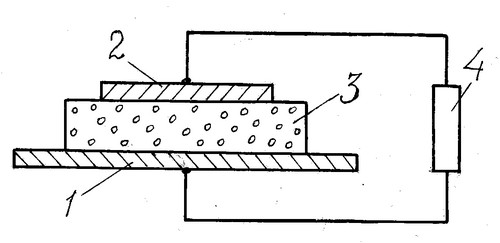
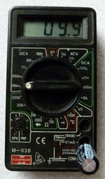
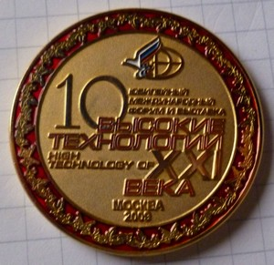
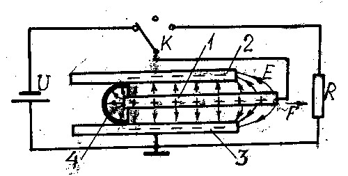
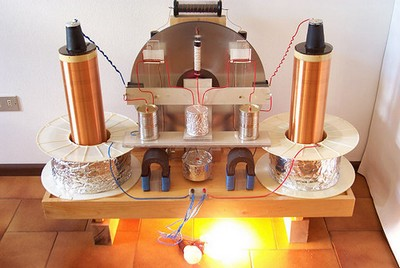

Бестопливные источники электричества

Самой удобной и универсальной является
электрическая энергия. Из электричества легко получить тепло, свет,
механическое движение, химические процессы. Разработчики альтернативной
энергетики XXI века учитывают это и отдают предпочтение вечным
источникам электрического тока, которые ничего не потребляют и ничего не
выделяют в окружающую среду.
В качестве примера начнём с источника энергии, созданного в лаборатории
«Наномир» А. Кушелевым [1]. Источник «представляет собой проводящую или
диэлектрическую резонансную систему, преобразующую внутреннюю энергию
носителя электромагнитных колебаний в спектр электромагнитных
колебаний». Области применения: «энергетика, транспорт, строительство,
космос» и т.д. Если у атомного реактора минимальная масса составляет
1000 кг, а удельная мощность менее 1 Вт/кг, то у источника Кушелева – 1
мкг и 10000 ГВт/кг соответственно. Разница не маленькая! В добавок к
этому, атомная электростанция изменяет структуру вещества и требует
топлива, а кушелевский источник – нет. Установка якобы уже создана и на
доводку нужно всего $ 600000 на 3 года.
Человек 2007 года, международный эксперт по вопросам энергофизики,
философии и права Американского биографического института, Председатель
инновационной фирмы «Кооперативный центр Транстехнологий Мотовилова»,
главный инженер проекта Международного интеллектуального фонда
«Перестройка естествознания», русский профессор Д.Н. Мотовилов из города
Пензы, по его словам, сделал секретное открытие, на базе которого за 1 –
2 года обещает наладить выпуск портативных индивидуальных генераторов
электричества, абсолютно ничего не потребляющих [2]. Принцип действия не
сообщает. Говорит, что цена генератора вначале будет составлять 30
тысяч рублей, а в дальнейшем упадет до 10 тысяч. За свои обещания
получил дипломы и грамоты мэра Пензы и Министерства науки и образования
РФ. Однако денег они не дали, хотя просил на два года всего 3 миллиарда
рублей. Обращался даже в Союз русского народа, но и там не был понят.
Доктор технических наук В.В. Марухин и кандидат технических наук В.
Кутьенков изобрели компактное и легкое в изготовлении устройство,
позволяющее получать неограниченную и экологически чистую энергию, не
потребляя при этом ни грамма топлива [3]. Принцип действия устройства
основан на гидравлическом таране, применяемом в фонтанах и оросительных
системах. Под воду опускают бочку, в которой происходит преобразование
статического давления слоя воды в высокоскоростную струю, вращающую
турбину с генератором. При этом, по утверждению авторов, не требуется
перепада высот и слива воды. Электрогенерирующий модуль мощностью 500
кВт имеет высоту 7,9 м, диаметр 2,8 м и позволяет снизить цену на
электричество до 2,5 коп./кВт-ч. Он может быть установлен не только на
стационарных, но и на передвижных электростанциях, а также на надводных и
подводных кораблях любого водоизмещения, заменив дизельные и атомные
энергетические установки. Для реализации своей мечты ученые
создали НПО «Подводные электрогенерирующие системы», обращались с
предложениями в Минпромэнерго России, правительство Москвы и Роснауку.
Не получив признания, группа Марухина покинула родину и уехала в
Испанию, где якобы и наладила выпуск генераторов мощностью 100 кВт.
На самом деле при работе гидравлического тарана новая энергия не
создается. Это аналог повышающего электрического трансформатора: на
входе большой поток с малой скоростью, на выходе – меньший поток с
большей скоростью. Кинетические энергии потоков до тарана и после него
равны (без учета неизбежных потерь). Поэтому и данное изобретение
работать не может.
Н.И. Синицын и В.А. Ёлкин в научной статье [4] сообщают об
открытии нового водоэлектрического эффекта, обусловленного
«структурированием водной среды» между электродами, при котором идет
вечная генерация электрического тока тонким водосодержащим слоем. Им с
коллегами даже выдан патент России на метод получения электроэнергии с
помощью воды непосредственно из окружающего пространства [5]. Генератор
представляет собой конденсатор, нижний электрод 1 которого полированный,
а верхний 2 содержит микро- или нанонеоднородности (рис. 1). Прослойка 3
между электродами должна быть пористой и пропитанной водой. Лучшим

Рис. 1. «Неиссякаемый» водный источник электрического тока Синицына и Ёлкина: 1,2 – электроды, 3 – пористый водосодержащий слой, 4 - нагрузка
материалом для нее является мертвая кожа (оказывается, у живой кожи энергоотдача в 10 – 30 раз меньше). С верхнего электрода 2 на нагрузку 4 обычно снимается положительный потенциал, а с нижнего 1 - отрицательный. Казалось бы, простая батарейка, но в батарее энергия берется из химической реакции и ограничена, а здесь – из пространства и поэтому бесконечна! Неужели не запустят в производство?
Вечную батарейку давно создаёт также доцент Ростовского университета (ныне ЮФУ) канд. физ.-мат. наук С. Герасимов [6 - 9]. Он взял медный стакан диаметром 30 и высотой 25 мм, залил в него воды, а сверху вставил латунный цилиндрический электрод диаметром 4 мм, закрепленный в пластмассовой крышке. Электронный милливольтметр неожиданно показал между корпусом стакана и электродом напряжение в несколько милливольт. Доцент сделал вывод, что это работает обычная вода: «электроэнергию извлечь из воды всё-таки можно» [6]. Вскоре выяснилось, что генерация тока зависит от освещенности воды, времени и многого другого [7]. Поместив свой аппарат в пластиковую пирамиду размерами 155х155х110 мм, 5 октября 2009 года в 11 часов 12 минут Герасимов обнаружил заметное повышение напряжения [8]. 21 марта 2008 года вода из стакана почему-то вытекла в пирамиду, а 28 марта «зарегистрировали очень мощные осцилляции шумов» [9]. Однажды учёный заметил, что «что-то электрически странное происходит с водой примерно через час после начала измерений: вдруг ни с того, ни с чего она начинает электрически шуметь» [8]. Ему бы перекреститься, да окропить аппарат святой водой, а он сел писать очередную статью. Свои открытия он объяснил проводившимися испытаниями «Ростовского сувенира» и сделал вывод, что «что-то непонятное творится под пирамидой» [9]. От дальнейших объяснений доцент воздержался: «лучше и безопаснее пока сыграть в несознанку» [7]. В [7] он сообщает и о реакции его коллег по университету: «Месяцы и месяцы измерений, сопровождаемые скептицизмом химиков, физиков и инженеров. Узнав об этих результатах, кандидат химических наук Л. Скибина, мягко говоря, усомнилась в умственных качествах автора». Однако профессор А. Богатин не только не усомнился, но и поддержал работу. Руководство ЮФУ тоже, видимо, поддерживает доцента, а самое страшное – позволяет ему привлекать к своей работе студентов и аспирантов, которые вполне могут подцепить болезнь руководителя. А когда-то в РГУ были настоящие ученые, знавшие, что в эфире полно сигналов радиостанций, телецентров, сотовых телефонов и промышленных помех!
Москвич Ю.Е. Виноградов изготовил «по российским технологиям» действующий макет вечного источника электроэнергии, продемонстрировал его на выставке «Высокие технологии XXI века» 2009 г. и получил за своё изобретение Золотую медаль (рис. 2) [10, 11]. А раз, говорит дали Золотую


Рис. 2. Аппарат Виноградова и медаль за него. Справа снизу на клеммах тестора установлен сам неиссякаемый источник энергии - конденсатор.
медаль, то дайте и 10 миллиардов рублей на три года, после чего будете получать отдачу в 100 триллионов рублей ежегодно. Кроме того обещает повернуть Гольфстрим куда надо. Обращался к президенту и в другие инстанции, но денег не дали, а из МЧС вывели под руки. После этого, пишет, «жаловался я на ФСБ, Минобразования, Минэнергетики, Минэкономразвития, где не хотят рассматривать проблему отставания России в топливной эффективности. Отвечают девочки, но не VIP персоны» [11]. Пришлось обратиться к духовенству – у них-то деньги есть! [12]. Служителям Бога он пишет, что на разработку «получил одобрение Президента РАН Ю. Осипова, в телевизионной передаче «Фабрика мысли» демонстрировал действующий макет на канале ТВЦ 16 марта 2008 г.» и т.д. Однако патриарх Алексий не помог изобретателю, за что, говорит, Господь Бог и забрал его через две недели. Патриарх Кирилл должен подумать, прежде чем отказать!
А что же представляет собой аппарат Виноградова, из-за которого весь сыр-бор? Это простой плёночный полимерный конденсатор ёмкостью 1000 мкФ, на котором изобретатель с помощью электронного вольтметра и обнаружил напряжение около 1 мВ (рис. 2). Изобретатель «академиев не кончал» и не мог знать, что какое-то напряжение на конденсаторах, особенно полимерных, есть всегда и обусловлено оно не концентрацией энергии окружающей среды, а наличием в диэлектрике остаточного заряда, возникшего после подачи тока или за счёт трибоэлектрического эффекта при изготовлении. Это напряжение не исчезает полностью даже при коротком замыкании. Недаром по правилам техники безопасности нельзя прикасаться к электродам высоковольтных конденсаторов даже после их разрядки – убить может! Так что Виноградов изобрёл велосипед, на котором решил въехать в рай миллиардеров.
В Венгрии Золтан Лозонк изобрел свой вечный двигатель, названный «генератором свободной энергии». На родине поддержки не получил и поэтому предложил его россиянам [13]. Аппарат представляет собой трёхэлектродный конденсатор, на внутренний электрод 1 которого подано постоянное напряжение, а наружные электроды 2, 3 заземлены (рис. 3). На край внутреннего электрода автор прикрепил с помощью диэлектрика полуцилиндрический электрод 4, скользящий по наружным электродам и служащий для нейтрализации краевого поля.

Рис. 3. Генератор Золтана Лозонка: 1- внутренний электрод конденсатора, 2 и 3 – наружные обкладки, 4 – нейтрализатор краевого поля, U – источник питания, R - нагрузка
Работа генератора «свободной», т.е. получаемой без затрат сил и топлива, электроэнергии основана на изменении емкости заряженного конденсатора перемещением внутреннего электрода. Если конденсатор емкостью С1 зарядить от источника постоянного напряжения U, то на нем накопится заряд Q = C1U. При этом конденсатор запасет энергию W 1 = Q2/(2C 1). Если отключить конденсатор от источника, переведя коммутатор К во второе положение, а его емкость уменьшить до значения С1 выдвижением электрода 1, то заряд Q не изменится, а энергия W2 = Q2/(2C2) вырастет. Например, если емкость уменьшить в 10 раз, что нетрудно сделать, то энергия увеличится в 10 раз. Теперь переведем коммутатор К в третье положение, подключив нагрузку R. Конденсатор разрядится через нагрузку, отдав ей свою энергию W2. Следовательно, затратив от источника питания U энергию W1, мы получим на нагрузке энергию W2, которая в нашем примере в 10 раз больше W1. По мнению автора, здесь создаётся дополнительная энергия 9W1. Для непрерывного съема электроэнергии и повышения мощности можно разместить множество обкладок на оси ротора, как лопатки в турбине, коммутатор сделать электронным, а часть получаемого тока пустить на вращение ротора. Тогда получим настоящий perpetuum mobile!
Как показано нами в [14], и этот изобретатель ошибается. Им предложен известный параметрический генератор с переменной ёмкостью, энергия в котором берётся от генератора накачки, модулирующего емкость. Для того, чтобы уменьшить ёмкость заряженного конденсатора, т. е. вытащить электрод 1 из обкладок 2, 3, нужно совершить работу. Ведь без труда не вытащишь и рыбку из пруда! Заряженный конденсатор сопротивляется уменьшению своей емкости: чтобы выдвинуть электрод 1 из обкладок 2, 3, нужно приложить силу F (рис. 3), противодействующую силам электростатического притяжения. Конечно, силы притяжения направлены в основном перпендикулярно обкладкам. Однако имеется краевое электрическое поле Е между краем электрода 1 и краями 2, 3. Изобретателю удалось нейтрализовать краевое поле левой стороны электрода 1, уменьшив силу, но справа краевое поле осталось. На преодоление продольной составляющей этого поля и нужна работа.
Нейтрализатор, следовательно, не уничтожает силу F, необходимую для уменьшения емкости, а лишь уменьшает ее примерно вдвое. И то хорошо, скажете вы – если без нейтрализатора КПД параметрического генератора был близок к 100 %, то теперь будет - 200 %! Но и это не так. Дело в том, что вырабатываемая электроэнергия уменьшится при этом более чем в два раза. Она определяется разницей емкостей С1 и С2. При введении нейтрализатора эти емкости увеличиваются на емкость нейтрализатора Сн, которая больше краевой емкости пустого конденсатора, меньшей С2. Следовательно, минимальная емкость с нейтрализатором увеличивается более чем вдвое, а максимальная остается практически неизменной. Поэтому энергия W2н = Q2/(C2 + Cн) уменьшится более чем в два раза по сравнению с системой без нейтрализатора. Более чем вдвое за счет изобретения уменьшается и вырабатываемая электроэнергия W1 – W2, а КПД, как и в простейшем варианте, остается менее 100 % . А если учесть появляющееся трение между нейтрализатором 4 и обкладками 2, 3, то КПД параметрического генератора окажется ещё ниже.
Можно, конечно, поставить нейтрализатор и с правой стороны конденсатора, продлив наружные обкладки 2, 3 за пределы смещения обкладки 1. Этим способом можно полностью устранить возвращающую силу F. Для перемещения обкладки 1 теперь не нужно совершать работу, если не учитывать силы трения. Однако при этом не будет меняться емкость конденсатора, а соответственно не будет вырабатываться и энергия.
В своей статье изобретатель пишет, что начаты эксперименты с его генератором свободной (читай, дармовой) энергии, хотя пока и безрезультатные. Из вышеизложенного очевидно, что результативными они быть и не могут.
Сразу 12 вариантов бестопливных генераторов электроэнергии изобрёл С. Соловьев из города Чебоксары [15]. Интересно то, что его статья помещена в журнале под рубрикой не «Вечные двигатели», а «Изобретение – новинка». Его аппарат представляет собой некую комбинацию из электродвигателя и динамомашины, оси которых соединены муфтой. Часть вырабатываемого динамо тока идет на вращение двигателя, а часть – потребителю. К сожалению, автор ничего не сообщил о том, дал ли какой-нибудь вариант хоть один киловатт-час электроэнергии.
В связи с Соловьевым вспоминается, как в 1990-е годы один сельский житель Подольского района Московской области аналогичный двигатель-генератор построил у себя во дворе. Работой аппарата восхищались многочисленные журналисты: он не только сам крутился, но и зажигал лампочку. В этом убедился и корреспондент журнала «Изобретатель и рационализатор», приехавший в деревню. Однако он обратил внимание на то, что корпуса двигателя и динамо вместе с проводами зацементированы, а какая-то цементная дорожка идет к простенку дома. Корреспондент зашел в дом и заметил на стене кабель, идущий из подполья, а на нём выключатель. Щелчок выключателя, и генератор остановился, а лампочка погасла. «Зачем же Вы ток-то подводите к вечному двигателю?» - спросил журналист. «А ты что – неграмотный? Иначе он работать не будет - потери-то компенсировать надо!» - ответил талантливый самоучка.
Д. т. н. профессор Кубанского агротехнического университета Ф.М. Канарёв открыл новый закон формирования средней мощности импульсов, на основе которого предложил импульсную энергетику, позволяющую снизить затраты на производство и потребление электроэнергии в число раз, равное скважности импульсов. Например, при скважности 1000 расход уменьшается в 1000 раз. Это хотя и не вечный двигатель, но всё равно не плохо! Профессор написал книгу «Импульсная энергетика», а в своих докладах сообщает следующее. «В России разработаны и испытаны первые в мире самовращающиеся генераторы электрических импульсов. Роль мотора у них выполняет ротор, а роль генератора – статор... Электромоторы-генераторы – самые экономные производители и потребители электрической энергии» [16]. В отличие от подмосковного крестьянина, профессор не знал, что для самовращения необходим подвод тока – потери-то компенсировать надо!
Нечто подобное «на основе модели планеты Земля и шаровых конкреций» создал доцент Каспийского университета технологий и инжиниринга Г.В. Тарасенко. Кроме выхода из аппарата горных пород он зафиксировал напряжение на статоре генератора. Своё детище он скромно назвал в честь автора «генератором Тарасенко» [17].
Узнав, что я специалист по вечным двигателям, ко мне как-то обратился лифтёр из Москвы с просьбой поддержать его предложение, а то, говорит, учёные дураки и ничего не понимают. Его источник тока представляет собой лифт, нагруженный бетонными блоками, который непрерывно движется вверх – вниз. Вверх его поднимает электродвигатель мощностью 30 кВт, а опускаясь вниз он вращает ротор динамомашины мощностью 100 кВт. Из выдаваемых ею 100 кВт тридцать идет на подъем лифта, а семьдесят – в городскую сеть. Для непрерывной выработки тока работают в противофазе сразу 4 лифта. Я сказал изобретателю, что лифт с грузом, необходимым для выработки 100 кВт, 30-киловаттный двигатель не поднимет. Он заявил, что я тоже неграмотный, а он практик и знает, что лифт может работать и с перегрузкой.
Мы не будем обсуждать выполнявшийся под эгидой правительства Москвы проект троллейбуса, который сам себя обеспечивает электроэнергией за счёт установленного на крыше ветряка. Результат его испытаний в 2010 году очевиден.
А сколько таких бестопливных источников тока было создано за рубежом! И многие из них по сообщениям СМИ действовали! Пишут, например, что в Швейцарии, в городке Линден близ Берна в религиозной коммуне “Methernitha” с 1980 года работает perpetuum mobile мощностью 750 кВт, полностью обеспечивающий бытовые нужды поселка в тепле и электричестве. Изобретателем двигателя, названного «тестатик», является глава секты Пауль Бауман. Бауман никогда не учился даже в школе, так как родился в бедной крестьянской семье и с 12 лет начал сам зарабатывать себе на хлеб насущный, а потом попал в тюрьму. Озарение пришло на четвертом году заключения, где он и смастерил первый аппарат из консервных банок, обрывков проводов и прочего тюремного хлама.
Чтобы выведать секрет тестатика, болгарский профессор Стефан Маринов проник в коммуну Methernitha, вступив в её члены. Ему удалось дважды побеседовать с самим Бауманом и увидеть макет генератора (рис. 4). Оказалось, что тестатик – это «электростатическая индукционная машина», «которая сама поддерживает своё движение и вырабатывает огромное количество свободной

Рис. 4. Тестатик в действии
энергии». Принцип действия машины Маринову не раскрыли. Оказывается, по решению коммуны «секрет тестатика будет опубликован, если человечество поймет, что единственная возможность войти в эпоху высоких технологий, в которой человеку будут подвластны самые невероятные силы, это жить в скромности, в любви и солидарности со всем окружающим миром, с другими народами, с животным и растительным мирами». Всё разведанное Маринов изложил в книге «Тернистый путь к истине» (Internat. Publishers East-West, 1989).
Искренней вере в работоспособность вечных двигателей болгарину Маринову можно простить (в Болгарии верили даже Ванге). Удивляют только ученые России – страны всеобщей грамотности, которые не только не усомнились и не разоблачили явную ложь, но поверили творению сектанта и с восторгом пишут о нем в наших СМИ (об этом мы писали в [18]).
Академик академии паранаук, лауреат медали свободы Американского биографического института, научный эксперт Русского физического общества А.В. Фролов, сообщая о тестатике в [19], сетует на «отставание России в данном направлении новых технологий». Восхищается творением Баумана также член-корреспондент Международной академии энергоинформационных взаимодействий, действительный член Международной академии авторов научных открытий и изобретений Г.В. Николаев из Томска, описывая тестатик в главе «Обзор перспективных технологий XXI века» своей книги [20]. Как не восхищаться, если собственный «вечняк» Николаева, названный Мариновым «Сибирский Коля», работать не захотел.
Казалось бы, что о Баумане можно было и забыть. Ведь если в сообщениях о нём была доля истины, Швейцария давно бы прекратила закупки нефти и газа, и сама наоборот поставляла экологически чистые источники энергии всему миру. Однако в ноябре 2008 года выходит статья профессора Л. Сапогина и летчика-космонавта, дважды Героя Советского Союза В. Джанибекова [21], написанная ими после посещения швейцарской секты одним из соавторов. Вот что они пишут о тестатике: «Эти фантастические установки – генераторы постоянного тока – изготовлены в четырех типоразмерах: на мощности 0,1, 0,3, 3 и 10 кВт. Внешне агрегат очень напоминает обычную электростатическую машину с лейденскими банками, хорошо знакомую по школьному кабинету физики. В ней два акриловых диска с наклеенными 36 узкими секторами из тонкого алюминия. Диски вращаются в разные стороны, и механическая энергия, затрачиваемая на вращение, в сотни тысяч раз меньше вырабатываемой электрической энергии… Ощущается слабый запах озона». Как подводится и отводится ли энергия от машины, жаждущий чуда визитер конечно не заметил. При такой наивности глядя как распиливают, а затем соединяют девушку в цирке, он тоже удивился бы мастерству циркового хирурга, который после такой операции не оставил на теле даже рубца!
Профессор и космонавт не только восхищаются творением сектанта Баумана, называя безграмотного гуру «швейцарским физиком», но и дают «научное» обоснование работоспособности тестатика. Для этого используется унитарная квантовая теория (УКТ), развитая Л.Г. Сапогиным. Из УКТ якобы следует ошибочность закона сохранения энергии. Материя и энергия, по Сапогину, могут как рождаться в «Родильном доме», так и уничтожаться в «Крематории». Истинность его теории якобы подтверждается не только работой вечного двигателя, но и тягой без отбрасывания массы в безопорных движителях.
«Скажи мне кто твой друг, и я скажу, кто ты» - гласит пословица. Друг Сапогина профессор Технического университета МАДИ В.И. Участкин на своих лекциях по УКТ и новым источникам энергии доказывает студентам неверность закона сохранения энергии таким примером. Чтобы втащить на пятый этаж мешок картошки, нужно изрядно потрудиться. А если вносить по одной картофелине (да ещё раздав их студентам, бегущим на лекцию!), подъём труда не составит.
Не жили эти профессора при товарище Сталине! Их предшественник доктор физико-математических наук М.П. Бронштейн ещё в 1935 году доказал, как ему казалось, ошибочность закона сохранения энергии на основе обычной квантовой механики. В статье [22] он пишет: «Никакой физический закон не является догматом и не может считаться apriori абсолютной и универсально применимой истиной. Так учит материалистическая философия... Вот почему мы думаем, что существует принципиальная возможность в физике будущего построить вечный двигатель, использующий такие отклонения от закона сохранения энергии. И, быть может, техника будущего коммунистического человечества, человечества, совершившего прыжок из царства необходимости в царство свободы, будет основана как раз на таком вечном двигателе». Предложение строить коммунизм на основе не тепло- и гидроэлектростанций, а вечных двигателей мудрый вождь понял как вредительство, и по приговору Военной Коллегии Верховного Суда СССР 18 февраля 1938 года Бронштейн был расстрелян как враг народа. Теперь другие времена - руководство страны не реагирует на бредовые идеи, а суд не осуждает их авторов. Вот только о чем только думают в Министерстве образования России, допуская перечисленных профессоров и доцентов к работе со студентами?
Ясно, что из ничего может что-то сделать только золотая рыбка, но и то в сказке. Человек же на такое не способен. Следующим посетителям швейцарской секты хотелось бы посоветовать не восхищаться работой демонстрируемого «вечного» двигателя, а поискать провода, по которым к нему подводится ток от сети. Также неплохо зайти в энергетическую компанию, обслуживающую поселок, и по счетам узнать количество потребляемой общиной электроэнергии.
Жаль, что нам снова не удалось найти альтернативного источника энергии для энергетики будущего. Придётся продолжить наш поиск.
ЛИТЕРАТУРА
1. http//ftp.decsy.ru/nanoworld/
2. bolshoyforum.org/wiki/index.php/Мотовилов_Дмитрий_Николаевич
3. Евразийский пат. № 005489; Попова Н. Подводный таран против «дизельного» дерева. Аргументы недели, 2008, № 14, с. 10 - 12
4. Н.И. Синицын, В.А. Ёлкин. Явление генерации электрической энергии
тонким водосодержащим слоем. Биомедицинские технологии и
радиоэлектроника, 2006 № 1 – 2, с. 35 - 53
5. Пат. РФ № 2339152
6. С. Герасимов, Н. Колесников. Вода: вольтметр или источник тока? Инженер, 2011, № 10, с. 14 – 15
7. С. Герасимов. Э.Д.С., вода и темнота. Инженер, 2012, № 3, с. 18 – 20
8. С. Герасимов, О. Клименко. Вода, электричество и ... пирамида. Инженер, 2010, № 5, с. 4 - 7
9. С. Герасимов, Н. Кривоносова. Пирамида мистическая, пирамида физическая. Инженер, 2008, № 11, с. 10 – 12
10. Ю. Виноградов и др. Инволюция. Инженер, 2011, № 10, с. 2 – 7
11. Ю. Виноградов и др. Не просто критика ситуации, а реальное предложение. Инженер, 2012, № 3, с.2 – 8
12. Ю. Виноградов. Обращение к духовенству. Инженер, 2012, № 8, с. 34 - 40
13. Золтан Лозонк. Генератор свободной энергии (механически изменяемая
ёмкость конденсатора). Новая Энергетика, 2004, № 1 (16), с. 19 – 24
14. В. Петров. А будет ли работать генератор Золтана Лозонка? Техника – молодёжи, 2005, № 2, с. 29
15. С. Соловьев. Электродвигатель – генератор (варианты). Инженер, 2009, № 2, с. 26 – 30; Пат. РФ № 62305
16. Ф.М. Канарёв. Импульсная энергетика. Программа и тезисы 18-й
Российской конф. по холодной трансмутации ядер химических элементов и
шаровой молнии. М., 2011, с. 38
17. Г.В. Тарасенко. Генератор Тарасенко на основе модели планеты Земля и шаровых конкреций. Там же, с. 33
18. В. Петров. Швейцарский тестатик и российские ученые. Инженер, 2010, № 1, с. 32 - 33
19. А.В. Фролов. Свободная энергия. ЖРФМ, 1997, № 1 – 12, с. 59 – 94
20. Г.В. Николаев. Тайны электромагнетизма и свободная энергия. Томск, 2002
21. Л. Сапогин, В. Джанибеков. Какая физика запрещает вечный двигатель? Техника – молодежи, 2008, № 902, с. 38 – 42
22. М.П. Бронштейн. Сохраняется ли энергия? Социалистическая
реконструкция и наука, 1935, вып. 1, с. 7 –